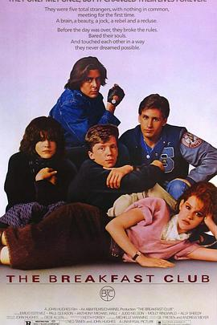

早餐俱乐部 / The Breakfast Club
喜欢镜头与场景设计。故事寓教于乐，问题儿童们围坐在一起发现家家有本难念的经，自己也许并非那么糟糕。喜欢一段逃跑的蒙太奇与最后音乐里舞蹈的画面，那一段黏屁屁的自述演得很棒。喜欢Claire的白眼。他们有那么一部代表作记录了他们的青春容貌，真好哦。其他人成对成双，最后只有小天才沉沦在了自己的作文里真真乐坏我了。
作品信息
| 导演 | 约翰·休斯 |
| 编剧 | 约翰·休斯 |
| 主演 | 艾米利奥·艾斯特维兹 / 安东尼·迈克尔·豪尔 / 约翰·卡普洛斯 / 贾德·尼尔森 / 莫利·林沃德 / 艾丽·西蒂 |
| 类型 | 剧情 / 喜剧 |
| 制片国家/地区 | 美国 |
| 语言 | 英语 |
| 上映日期 | 1985-02-07 |
| 片长 | 97 分钟 |
| IMDb | tt0088847 |
说过什么
2026-08-02 17:19:26
广播 · 看过 · ★★★★☆
喜欢镜头与场景设计。故事寓教于乐，问题儿童们围坐在一起发现家家有本难念的经，自己也许并非那么糟糕。喜欢一段逃跑的蒙太奇与最后音乐里舞蹈的画面。
2026-08-02 10:37:51
广播 · 想看
最后一次看到是 2026-10-07T23:12:41+08:00 · 豆瓣原页